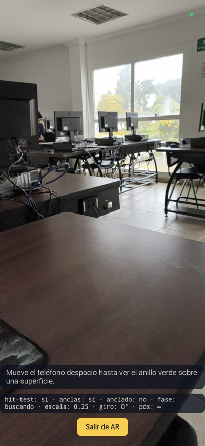
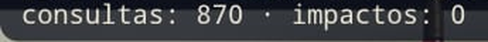

Al terminar la Sesión 38 el cubo estaba en (0, −0.2, −1.5): un punto del espacio local elegido por nosotros. El sistema sabía dónde estaba el teléfono, pero nadie le había preguntado dónde hay un piso o una mesa. Hoy se lo preguntamos. Hay tres piezas nuevas, y cada una responde a una pregunta distinta:
Objetivos de aprendizaje
- ✓Explicar qué agregan el hit-test y las anclas a una sesión AR: el cubo deja de flotar en un punto cualquiera y pasa a apoyarse en una superficie que el sistema encontró.
- ✓Pedir funciones opcionales de WebXR y averiguar cuáles concedió el navegador, diseñando un plan B para cada una que falte.
- ✓Buscar superficies con un
XRHitTestSourceen el espacioviewer, dibujar una retícula que las siga y colocar el objeto con un toque (select). - ✓Anclar el objeto con un
XRAnchor, seguir su pose fotograma a fotograma y limpiar las anclas viejas al recolocar. - ✓Implementar gestos (mover, girar, escalar) con Pointer Events y la geometría de un rayo que corta un plano, sin que un arrastre se confunda con un «tocar para colocar».
- ✓Probar todo con IWER y una sala sintética, y saber qué comprueba un emulador y qué solo un teléfono.
Recursos de esta sesión
- Descargar .zipCheckpoint — cierre de la Sesión 38. El Atlas 3D con la sesión AR de la sesión anterior (detección, «Ver en AR», «Salir de AR» y publicación en GitHub Pages). Es el punto de partida: este .zip NO tiene retícula, ni colocación, ni gestos.
- Descargar .zipVersión terminada de esta sesión. Agrega
gestos.ts, el hit-test, las anclas y el plan B. Úsalo para ejecutar el resultado y comparar con tu propio trabajo; intenta construirlo tú primero a partir del checkpoint.
1De «flotando a metro y medio» a «apoyado en la mesa»
| Pregunta | Pieza de WebXR | Qué devuelve |
|---|---|---|
| ¿Qué superficie hay en esa dirección? | Hit-test: XRHitTestSource y frame.getHitTestResults() | Una lista de impactos; de cada uno, una pose (posición y orientación) sobre la superficie |
| ¿Cómo hago que el cubo se quede ahí? | Anchors: frame.createAnchor() y XRAnchor | Un punto del mundo real que el sistema sigue corrigiendo a medida que entiende mejor la escena |
| ¿Cómo sé que el usuario quiere colocarlo? | Evento select de la sesión | Un toque en la pantalla, con el XRFrame de ese instante |
La idea central de un hit-test es la del rayo: el sistema lanza una recta desde algún origen en alguna dirección y dice dónde choca con una superficie que conoce. Hoy el origen será el propio teléfono, apuntando hacia donde mira la cámara. Y la gran lección del diseño es la de siempre en este curso: ninguna de estas funciones está garantizada. Un teléfono sin ARCore completo puede abrir una sesión AR y aun así no ofrecer hit-test; otro puede ofrecer hit-test y no anclas. La app tiene que seguir siendo útil en cada combinación.
2Pedir funciones opcionales y comprobar cuáles te dieron
En la sesión anterior la petición llevaba dom-overlay como opcional. Ahora se suman hit-test y anchors. La regla general es pedir como opcional lo que tiene plan B: si fuera requerido, un dispositivo sin esa función ni siquiera abriría la sesión. anchors y dom-overlay siguen esa regla. hit-test tiene una historia distinta, que se cuenta en la sección 9: se pide primero como requerida y solo si el dispositivo no la ofrece (NotSupportedError) se reintenta como opcional, con el plan B.
src/xr.ts (pedir la sesión)
/**
* Pide la sesión AR. DEBE llamarse desde el manejador de un clic: sin gesto del
* usuario, el navegador la rechaza con SecurityError.
*
* Primer intento: `hit-test` como función REQUERIDA. Con ella opcional, Chrome en Android
* concedía la función y creaba la fuente, pero nunca entregaba una superficie; como requerida,
* el anillo sale. Si el dispositivo no la ofrece (NotSupportedError), se reintenta con todo
* opcional: la sesión se abre igual y la app usa su plan B.
*/
export async function pedirSesionAR(overlay: HTMLElement | null): Promise<XRSession> {
const abrir = (requeridas: string[], opcionales: string[]) => {
const opciones: XRSessionInit & { domOverlay?: { root: Element } } = {
requiredFeatures: requeridas, // «local»: el origen (0,0,0) es donde está el usuario al empezar
optionalFeatures: opcionales,
};
if (overlay) opciones.domOverlay = { root: overlay };
return navigator.xr!.requestSession("immersive-ar", opciones);
};
try {
return await abrir(["local", "hit-test"], ["dom-overlay", "anchors"]);
} catch (error) {
if ((error as DOMException).name !== "NotSupportedError") throw error;
return abrir(["local"], ["dom-overlay", "hit-test", "anchors"]);
}
}Pedir una función opcional no significa recibirla. La sesión lo dice en enabledFeatures, una lista con los nombres de las funciones concedidas. Como no todos los navegadores la exponen todavía, capacidadesDe usa un respaldo: si la lista no existe, mira si las funciones de la API están disponibles. El resultado es un objeto con tres booleanos que el resto de la app consulta:
src/xr.ts (qué concedió el navegador)
/** Qué funciones opcionales concedió de verdad el navegador en esta sesión. */
export interface CapacidadesAR {
overlay: boolean; // dom-overlay: botones HTML y gestos de dedos sobre la cámara
hitTest: boolean; // hit-test: preguntar «¿dónde está la superficie en esta dirección?»
anclas: boolean; // anchors: fijar un punto del mundo real y que el sistema lo siga corrigiendo
}src/xr.ts (leer las capacidades)
/**
* Pedir una función no garantiza recibirla. `enabledFeatures` lista las concedidas;
* si el navegador aún no la ofrece, se mira si existen las funciones de la API.
*/
export function capacidadesDe(sesion: XRSession): CapacidadesAR {
const concedidas = (sesion as XRSession & { enabledFeatures?: string[] }).enabledFeatures;
const tiene = (nombre: string, respaldo: boolean) => (Array.isArray(concedidas) ? concedidas.includes(nombre) : respaldo);
return {
overlay: Boolean(sesion.domOverlayState),
hitTest: tiene("hit-test", typeof sesion.requestHitTestSource === "function"),
anclas: tiene("anchors", typeof XRFrame !== "undefined" && "createAnchor" in XRFrame.prototype),
};
}Con esas tres respuestas la app decide, y el usuario lo ve en la pantalla: tras abrir la sesión, la línea de estado enumera lo que no se concedió. La tabla resume el plan B de cada caso:
| Falta… | Qué hace la app | Qué pierde el usuario |
|---|---|---|
anchors | Coloca igual; el objeto queda fijo en el espacio local, sin que el sistema lo corrija. | Con el tiempo puede «derivar» respecto al mundo real. |
hit-test | No hay retícula: el cubo se coloca a 1,5 m delante de la mirada, y un toque lo trae de nuevo delante. | El cubo no se apoya en una superficie real. |
dom-overlay | Se puede colocar con un toque, pero no hay botón «Salir» ni gestos con los dedos. | Mover, girar y escalar; el botón sobre la cámara. |
| Las tres | Es exactamente la Sesión 38: un cubo flotando. | La app sigue abriendo AR; solo es menos útil. |
3Dos niveles en la escena: quién manda sobre qué
El cubo ahora tiene dos jefes. El sistema decide dónde está el punto de apoyo (la superficie, y después el ancla, que se corrige sola). El usuario decide qué hace el cubo respecto a ese punto (lo desplaza, lo gira, lo agranda). Si ambos escribieran en el mismo objeto, se pisarían: cada fotograma el ancla devolvería el cubo a su sitio y deshacería el arrastre del usuario. La solución es separar las responsabilidades con dos nodos anidados:
src/visor.ts (dos niveles)
// Dos niveles: `raiz` sigue a la superficie o al ancla (lo manda el sistema);
// `grupo` es el objeto con lo que decide el usuario (mover, girar, escalar).
const raiz = new THREE.Group();
const grupo = new THREE.Group();
const cubo = new THREE.Mesh(
new THREE.BoxGeometry(1.6, 1.6, 1.6),
new THREE.MeshStandardMaterial({ color: 0xffcc29, roughness: 0.45 })
);
const aristas = new THREE.LineSegments(
new THREE.EdgesGeometry(cubo.geometry),
new THREE.LineBasicMaterial({ color: 0x0b1220 })
);
grupo.add(cubo, aristas);
raiz.add(grupo);
escena.add(raiz);raizes el punto de apoyo. Su matriz (posición y orientación) viene entera del sistema: de la retícula al colocar y, después, del ancla. Por eso en AR se le apagamatrixAutoUpdate: Three.js no debe recalcularla desdepositionyrotation, porque se la damos ya hecha conmatrix.fromArray(...).grupoes el cubo, hijo deraiz. Susposition,rotation.yyscaleson locales: el usuario los cambia con los dedos y siguen valiendo aunque el ancla se corrija.
Otro detalle de unidades: el cubo mide 1,6 y su origen está en el centro. Si la superficie está en y = 0 y dejamos el cubo en y = 0, queda medio hundido. Por eso la posición local en y es MITAD × escala (0,8 × 0,25 = 0,2 m): así la base apoya en la superficie. Cada vez que cambia la escala, esa altura se recalcula. Estas son las constantes y el estado que usa todo lo demás:
src/visor.ts (estado y constantes)
/** En qué punto está la colocación del objeto. */
export type FaseAR = "buscando" | "listo" | "colocado";
export interface EstadoAR extends CapacidadesAR {
fase: FaseAR;
/** true si el objeto está anclado: el sistema sigue corrigiendo su posición. */
anclado: boolean;
escala: number; // 1 = el tamaño del modelo (1,6 m); empieza en 0,25
giroGrados: number;
/** Centro del objeto en el espacio «local» (metros): x derecha, y arriba, -z adelante. */
posicion: { x: number; y: number; z: number };
/** Diagnóstico: cuántas veces se preguntó al hit-test y cuántas respondió con una superficie. */
consultas: number;
resultados: number; // consultas en que el sistema devolvió algo
impactos: number; // consultas con una pose utilizable
/** true si pasaron varios segundos sin superficie: el toque ya coloca delante de la mirada. */
sinSuperficie: boolean;
}
export interface OpcionesAR {
overlay: HTMLElement;
alCambiar: (estado: EstadoAR) => void;
alTerminar: () => void;
}
const ESCALA_INICIAL = 0.25; // el cubo de 1,6 m queda en 40 cm
const ESCALA_MIN = 0.1;
const ESCALA_MAX = 1;
const CADA_CUANTOS_FOTOGRAMAS = 2; // el hit-test se consulta un fotograma de cada dos: basta para una retícula fluida
const MS_HASTA_PLAN_B = 6000; // sin superficie tanto tiempo: se avisa y el toque coloca delante de la mirada
const CONSULTAS_SIN_IMPACTO = 8; // consultas seguidas sin superficie antes de ocultar la retícula (evita parpadeos)
const MITAD = 0.8; // medio cubo: para que apoye la base (y no el centro) en la superficiesrc/visor.ts (estado de la colocación)
// ── Estado de la colocación ──
let fase: FaseAR = caps.hitTest ? "buscando" : "colocado";
let ancla: XRAnchor | null = null;
let escala = ESCALA_INICIAL;
let consultas = 0;
let resultados = 0;
let impactosVistos = 0;
let sinSuperficie = false;
let ultimaPose = performance.now(); // cuándo fue la última vez que el hit-test encontró algo
let ultimoImpacto: XRRigidTransform | null = null; // pose de la superficie bajo el centro de la pantalla
const estado = (): EstadoAR => {
raiz.updateMatrixWorld(true);
const p = grupo.getWorldPosition(new THREE.Vector3());
return {
...caps,
fase,
anclado: ancla !== null,
escala,
giroGrados: ((aGrados(grupo.rotation.y) % 360) + 360) % 360,
posicion: { x: p.x, y: p.y, z: p.z },
consultas,
resultados,
impactos: impactosVistos,
sinSuperficie,
};
};
const avisar = () => opciones.alCambiar(estado());
// `raiz` deja de calcular su matriz sola: se la damos nosotros desde la superficie o el ancla.
raiz.matrixAutoUpdate = false;
grupo.position.set(0, MITAD * escala, 0); // la base apoya en la superficie
grupo.scale.setScalar(escala);
grupo.rotation.set(0, 0, 0);4La retícula: un hit-test desde el centro de la pantalla
Para preguntar «¿qué hay en esta dirección?» hace falta decir desde dónde sale el rayo. WebXR lo expresa con un espacio de referencia. Usamos el espacio viewer: su origen es el teléfono y su «adelante» es hacia donde mira la cámara. Un rayo desde viewer sale, entonces, del centro de la pantalla. La fuente de hit-test se crea una sola vez, al entrar a AR:
src/visor.ts (crear la fuente de hit-test)
// ── Hit-test: un rayo desde el centro de la pantalla («viewer») ──
let fuente: XRHitTestSource | null = null;
if (caps.hitTest) {
try {
const espacioViewer = await sesion.requestReferenceSpace("viewer");
try {
// «plane» exige que el sistema haya reconocido un plano (tarda y falla en superficies lisas);
// «point» acepta también puntos de característica sueltos: el anillo sale casi de inmediato.
fuente = (await sesion.requestHitTestSource?.({ space: espacioViewer, entityTypes: ["plane", "point"] })) ?? null;
} catch {
fuente = (await sesion.requestHitTestSource?.({ space: espacioViewer })) ?? null; // el navegador no admite «point»
}
} catch {
fuente = null;
}
if (!fuente) {
caps.hitTest = false; // lo concedió pero no funciona: plan B
fase = "colocado";
raiz.visible = true;
raiz.matrix.makeTranslation(0, -0.5, -1.5);
}
}Dos cosas para notar. requestHitTestSource puede fallar aunque enabledFeatures diga que existe, así que el try/catch convierte ese fallo en «sin hit-test» y activa el plan B. Y requestReferenceSpace("viewer") es asíncrona, como casi todo en esta API.
La retícula es un anillo de Three.js. Se crea acostado (rotateX(−π/2)) porque RingGeometry nace en el plano XY, de pie, y la pose del hit-test usa el eje Y como la normal de la superficie: un piso tiene la normal hacia arriba. Su matriz se la damos entera, igual que a raiz:
src/visor.ts (la retícula)
// Retícula: un anillo verde que se pega a la superficie que el hit-test encuentra.
const reticula = new THREE.Mesh(
new THREE.RingGeometry(0.1, 0.13, 40).rotateX(-Math.PI / 2), // acostado: su cara mira hacia arriba
new THREE.MeshBasicMaterial({ color: 0x4ade80 })
);
reticula.matrixAutoUpdate = false; // su matriz viene entera del hit-test
reticula.visible = false;
escena.add(reticula);Y en cada fotograma XR se consulta la fuente. frame.getHitTestResults(fuente) devuelve los impactos ordenados de más cerca a más lejos; getPose(referencia) convierte el primero a una pose en el espacio local que ya usamos para todo lo demás, y pose.transform.matrix es la matriz de 16 números lista para fromArray. Si no hay impactos (miras al cielo, o el sistema aún no entiende la escena), la retícula se oculta. Este es el bucle completo; la parte de las anclas se explica en la sección 6:
src/visor.ts (el bucle XR)
renderer.setAnimationLoop((_t, frame) => {
const referencia = renderer.xr.getReferenceSpace();
if (frame && referencia) {
if (fuente && cuadro++ % CADA_CUANTOS_FOTOGRAMAS === 0) {
const impactos = frame.getHitTestResults(fuente);
const pose = impactos.length ? impactos[0].getPose(referencia) : null;
consultas++;
if (impactos.length) resultados++;
if (pose) impactosVistos++;
if (consultas % 30 === 0) avisar(); // refresca el diagnóstico (el overlay lo limita a 5 veces por segundo)
if (pose) {
sinImpacto = 0;
sinSuperficie = false;
ultimaPose = performance.now();
reticula.visible = true;
reticula.matrix.fromArray(pose.transform.matrix);
ultimoImpacto = pose.transform;
if (fase === "buscando") {
fase = "listo";
avisar();
}
} else if (++sinImpacto >= CONSULTAS_SIN_IMPACTO) {
// Una superficie que aparece y desaparece cada fotograma haría parpadear el texto del overlay.
reticula.visible = false;
ultimoImpacto = null;
if (fase === "listo") {
fase = "buscando";
avisar();
}
}
if (!pose && fase === "buscando" && !sinSuperficie && performance.now() - ultimaPose > MS_HASTA_PLAN_B) {
sinSuperficie = true; // el texto de ayuda cambia y el toque ya coloca
avisar();
}
}
// Con ancla, la posición de `raiz` la corrige el sistema fotograma a fotograma.
if (ancla && frame.trackedAnchors?.has(ancla)) {
const poseAncla = frame.getPose(ancla.anchorSpace, referencia);
if (poseAncla) raiz.matrix.fromArray(poseAncla.transform.matrix);
}
}
renderer.render(escena, camara);
});La variable fase es una pequeña máquina de estados que la interfaz usa para decirle algo útil al usuario: buscando (no hay superficie: «mueve el teléfono despacio»), listo (hay superficie: «toca para colocar») y colocado. Mientras no se coloque, raiz está oculta: solo se ve la retícula.
5Colocar con un toque
En una sesión XR, un toque en la pantalla llega como el evento select de la sesión (no de un elemento HTML), y trae el XRFrame de ese instante, el único momento en que se pueden crear anclas. El código distingue los dos caminos, con y sin hit-test:
src/visor.ts (colocar)
let turno = 0; // numera los toques: si llegan dos seguidos, solo vale el último
async function colocar(frame: XRFrame) {
const referencia = renderer.xr.getReferenceSpace();
if (!referencia) return;
const mio = ++turno;
let impacto: XRRigidTransform | null = null;
const hayImpacto = fuente !== null && reticula.visible && ultimoImpacto !== null;
if (fuente && !hayImpacto && !sinSuperficie) return; // no hay superficie: no se coloca en el aire (todavía)
if (hayImpacto) {
impacto = ultimoImpacto;
raiz.matrix.copy(reticula.matrix); // el cubo aparece donde está la retícula
} else {
// Plan B (sin hit-test, o sin superficie tras varios segundos): delante de la mirada actual, a 1,5 m.
const posicion = new THREE.Vector3().setFromMatrixPosition(camara.matrixWorld);
const delante = camara.getWorldDirection(new THREE.Vector3()).setY(0).normalize();
posicion.addScaledVector(delante, 1.5);
posicion.y -= 0.5;
raiz.matrix.makeTranslation(posicion.x, posicion.y, posicion.z);
}
grupo.position.set(0, MITAD * escala, 0); // vuelve al centro de la nueva posición
raiz.visible = true;
fase = "colocado";
// ── Ancla: el sistema recuerda ESE punto del mundo real y lo sigue corrigiendo ──
ancla?.delete(); // al volver a colocar, la ancla anterior ya no sirve
ancla = null;
avisar();
if (impacto && caps.anclas) {
try {
const nueva = await frame.createAnchor!(impacto, referencia);
if (mio !== turno || !sesionAR) nueva.delete(); // llegó tarde: otro toque o la sesión ya terminó
else ancla = nueva;
} catch {
ancla = null; // el navegador rechazó anclar: el objeto queda fijo en el espacio «local»
}
avisar();
}
}- No se coloca en el aire. Si hay fuente de hit-test pero no hay impacto en este instante, el toque se ignora: el objeto aparece donde está la retícula o no aparece. La excepción es el plan B por tiempo: si pasan 6 s (
MS_HASTA_PLAN_B) sin encontrar ninguna superficie, el texto cambia a «No encuentro superficies…» y el toque coloca el cubo delante de la mirada, como en el plan B sin hit-test. - Recolocar es volver a tocar. Cada toque mueve
raiza la retícula y vuelve el cubo a su centro; la escala y el giro que el usuario eligió se conservan. - Plan B sin hit-test. La posición sale de la cámara: se toma hacia dónde mira (sin la inclinación vertical, con
setY(0)), se avanza 1,5 m y se baja 0,5 m. Es la misma idea de la Sesión 38, pero relativa a donde está el usuario ahora.
El evento se registra con sesion.addEventListener("select", …). Antes de colocar, pregunta a los gestos si ese toque ya se convirtió en un arrastre (sección 7):
src/visor.ts (el evento select)
sesion.addEventListener("select", (ev) => {
if (gestos.huboGesto()) return; // un arrastre no cuenta como «tocar para colocar»
void colocar((ev as XRInputSourceEvent).frame);
});6Anclas: que el cubo se quede donde lo pusiste
Una pose del hit-test es una foto de la superficie en ese instante, expresada en el espacio local. Pero el sistema de seguimiento no es perfecto: a medida que camina por la habitación y ve más detalles, ARCore refina su mapa y puede «reubicar» el mundo unos centímetros. Si el cubo estuviera pegado a coordenadas fijas, parecería deslizarse respecto a la mesa. Un ancla le pide al sistema que recuerde ese punto del mundo real, no esas coordenadas; en cada fotograma, la pose del ancla es la mejor estimación actual de dónde está ese punto.
El código ya mostrado tiene las tres partes del ciclo de vida de un ancla:
- Crearla en el toque:
frame.createAnchor(impacto, referencia), con la pose del hit-test. Devuelve una promesa. - Seguirla en el bucle: si
frame.trackedAnchorsla contiene,frame.getPose(ancla.anchorSpace, referencia)da su pose actual y se copia araiz.matrix. Si el sistema pierde el seguimiento un momento, el cubo se queda donde estaba y no desaparece. - Borrarla:
ancla.delete()al recolocar y al terminar la sesión. Un ancla viva le cuesta trabajo al sistema; las que ya no se usan deben soltarse.
La carrera de los dos toques.
createAnchor es asíncrona. Si el usuario toca dos veces seguidas, la segunda ancla puede resolverse antes que la primera, y al llegar tarde la primera pisaría a la segunda y dejaría el cubo siguiendo el punto equivocado. Por eso cada toque toma un número (turno) y, al resolverse, una ancla «vieja» se borra en vez de adoptarse. Los errores de este tipo no aparecen al probar despacio con un dedo: aparecen con usuarios reales.Y la rama de fallo: si createAnchor se rechaza (por ejemplo, el sistema perdió el seguimiento justo en ese instante), el cubo queda colocado pero no anclado; la línea de datos del overlay lo muestra con anclado: no. Al terminar la sesión todo se libera:
src/visor.ts (al terminar la sesión)
sesion.addEventListener(
"end",
() => {
renderer.setAnimationLoop(null);
renderer.xr.enabled = false;
sesionAR = null;
gestos.destruir();
fuente?.cancel();
ancla?.delete();
escena.remove(reticula);
reticula.geometry.dispose();
(reticula.material as THREE.Material).dispose();
escena.background = fondoPrevio;
controles.enabled = !porSensores;
raiz.matrixAutoUpdate = true;
raiz.matrix.identity();
raiz.visible = true;
grupo.position.set(0, 0, 0);
grupo.scale.set(1, 1, 1);
grupo.rotation.set(0, 0, 0);
ajustarTamano(); // el visor XR cambió el tamaño del canvas
bucle(); // vuelve el requestAnimationFrame normal
opciones.alTerminar();
},
{ once: true }
);7Gestos: mover, girar y escalar
En AR de teléfono, la pantalla es el overlay DOM que ya usamos para «Salir de AR». Eso nos regala algo: los dedos sobre el overlay llegan como Pointer Events normales (pointerdown, pointermove, pointerup), con coordenadas de pantalla. Un módulo nuevo, gestos.ts, los traduce a tres intenciones:
| Qué hace el usuario | Intención | Cómo se calcula |
|---|---|---|
| Un dedo se arrastra | Mover | Posición del dedo, tras superar un umbral de 10 px |
| Dos dedos se separan o se juntan | Escalar | Distancia actual ÷ distancia anterior |
| Dos dedos giran entre sí | Girar | Cambio del ángulo de la recta que une los dos dedos (atan2) |
src/gestos.ts (el módulo)
const UMBRAL_ARRASTRE_PX = 10; // por debajo de esto es un toque, no un arrastre
export function crearGestos(el: HTMLElement, acciones: AccionesGestos): Gestos {
const dedos = new Map<number, { x: number; y: number }>();
let inicio = { x: 0, y: 0 };
let arrastrando = false;
let hubo = false;
let distanciaPrev = 0;
let anguloPrev = 0;
const medida = () => {
const [a, b] = [...dedos.values()];
return { distancia: Math.hypot(b.x - a.x, b.y - a.y), angulo: Math.atan2(b.y - a.y, b.x - a.x) };
};
function alBajar(e: PointerEvent) {
// Los botones del overlay (como «Salir de AR») no inician gestos.
if ((e.target as HTMLElement).closest("button")) return;
if (dedos.size === 0) {
hubo = false;
arrastrando = false;
inicio = { x: e.clientX, y: e.clientY };
}
dedos.set(e.pointerId, { x: e.clientX, y: e.clientY });
if (dedos.size === 2) {
const m = medida();
distanciaPrev = m.distancia;
anguloPrev = m.angulo;
hubo = true; // con dos dedos nunca es un toque
}
}
function alMoverDedo(e: PointerEvent) {
const dedo = dedos.get(e.pointerId);
if (!dedo) return;
dedo.x = e.clientX;
dedo.y = e.clientY;
if (dedos.size === 1) {
if (!arrastrando && Math.hypot(e.clientX - inicio.x, e.clientY - inicio.y) < UMBRAL_ARRASTRE_PX) return;
const primero = !arrastrando;
arrastrando = true;
hubo = true;
acciones.alMover(e.clientX, e.clientY, primero);
} else if (dedos.size === 2) {
const m = medida();
if (distanciaPrev > 0) acciones.alEscalar(m.distancia / distanciaPrev);
let d = m.angulo - anguloPrev;
if (d > Math.PI) d -= 2 * Math.PI; // el ángulo da la vuelta en ±180°: se normaliza
if (d < -Math.PI) d += 2 * Math.PI;
acciones.alGirar(d);
distanciaPrev = m.distancia;
anguloPrev = m.angulo;
}
}
function alSubir(e: PointerEvent) {
dedos.delete(e.pointerId);
if (dedos.size === 0) arrastrando = false;
}
el.addEventListener("pointerdown", alBajar);
el.addEventListener("pointermove", alMoverDedo);
el.addEventListener("pointerup", alSubir);
el.addEventListener("pointercancel", alSubir);
return {
huboGesto: () => hubo,
destruir() {
el.removeEventListener("pointerdown", alBajar);
el.removeEventListener("pointermove", alMoverDedo);
el.removeEventListener("pointerup", alSubir);
el.removeEventListener("pointercancel", alSubir);
dedos.clear();
},
};
}Tres decisiones de diseño que vale la pena releer en el código:
- El umbral. Un dedo nunca está perfectamente quieto: un «toque» tiene microdesplazamientos. Por debajo de 10 px el movimiento se descarta; solo por encima, el toque se convierte en arrastre.
huboGesto()resuelve el conflicto entre tocar y arrastrar. Soltar un arrastre también genera unselect, que sin esta guarda recolocaría el cubo justo después de moverlo. La bandera se levanta cuando el toque pasa el umbral (o cuando entra un segundo dedo) y se baja al apoyar un dedo nuevo.- Se ignoran los botones. Si el
pointerdowncae sobre un<button>(por ejemplo, «Salir de AR»), no inicia gestos.
Girar y escalar son directos: se suman al grupo, el escalado con un tope (entre 0,1 y 1: de 16 cm a 1,6 m) y recalculando la altura para que la base siga apoyada. Mover es más interesante, porque hay que pasar de un punto de la pantalla (2D) a un punto de la superficie (3D). Es un problema de geometría de rayos:
- Se convierte la posición del dedo a coordenadas normalizadas (de −1 a 1 en cada eje, con Y hacia arriba).
- Three.js construye el rayo que sale de la cámara y pasa por ese punto (
setFromCamera). - Se define el plano de la superficie: pasa por el origen de
raizy su normal es el eje Y deraiz(la normal que nos dio el hit-test). - Se calcula dónde el rayo corta el plano (
intersectPlane). Si el rayo no baja hasta el plano (miras al cielo), no hay punto y no se mueve nada. - El punto está en coordenadas del mundo;
raiz.worldToLocallo expresa respecto araiz, que es lo que necesitagrupo.position. Como moverse es deslizarse sobre la superficie, solo cambian x y z; la altura no. - En el primer movimiento se guarda la distancia entre el punto tocado y el centro del cubo (
desfase), para que el cubo no «salte» a quedar centrado bajo el dedo.
src/visor.ts (mover, girar y escalar)
const rayo = new THREE.Raycaster();
const plano = new THREE.Plane();
const desfase = new THREE.Vector2();
const tmp = new THREE.Vector3();
function mover(clientX: number, clientY: number, primero: boolean) {
if (fase !== "colocado") return;
// Pantalla → rayo → punto donde ese rayo corta el plano de la superficie.
rayo.setFromCamera(new THREE.Vector2((clientX / window.innerWidth) * 2 - 1, -(clientY / window.innerHeight) * 2 + 1), camara);
raiz.updateMatrixWorld(true);
const normal = new THREE.Vector3(0, 1, 0).transformDirection(raiz.matrixWorld);
plano.setFromNormalAndCoplanarPoint(normal, tmp.setFromMatrixPosition(raiz.matrixWorld));
const punto = rayo.ray.intersectPlane(plano, new THREE.Vector3());
if (!punto) return; // el rayo no baja hasta el plano (miras al cielo)
const local = raiz.worldToLocal(punto);
// En el primer movimiento se recuerda a cuánto del centro del objeto tocó el dedo, para que no salte.
if (primero) desfase.set(grupo.position.x - local.x, grupo.position.z - local.z);
grupo.position.x = local.x + desfase.x;
grupo.position.z = local.z + desfase.y;
avisar();
}
const gestos = crearGestos(opciones.overlay, {
alMover: mover,
alGirar(rad) {
if (fase !== "colocado") return;
grupo.rotation.y += rad;
avisar();
},
alEscalar(factor) {
if (fase !== "colocado") return;
escala = Math.min(ESCALA_MAX, Math.max(ESCALA_MIN, escala * factor));
grupo.scale.setScalar(escala);
grupo.position.y = MITAD * escala; // la base sigue apoyada
avisar();
},
});En main.ts quedan dos detalles de integración. El texto de ayuda cambia según la fase (y según si hay dom-overlay, porque sin él no hay gestos), y se muestra una línea de datos con lo que la sesión concedió y la posición del cubo en metros: sirve para depurar y para las pruebas automáticas.
src/main.ts (texto de ayuda y datos)
// Texto de ayuda sobre la cámara según en qué punto va la colocación.
function ayudaAR(e: EstadoAR): string {
if (!e.hitTest) return "Este dispositivo no ofrece hit-test: el cubo está a 1,5 m delante. Toca para traerlo delante de ti.";
switch (e.fase) {
case "buscando":
return e.sinSuperficie
? "No encuentro superficies. Prueba con una zona con textura y buena luz, o toca la pantalla para colocar el cubo delante de ti."
: "Mueve el teléfono despacio hasta ver el anillo verde sobre una superficie.";
case "listo":
return "Toca la pantalla para colocar el cubo.";
case "colocado":
return e.overlay
? "Arrastra para moverlo, gira con dos dedos, pellizca para el tamaño. Toca otro punto para recolocarlo."
: "Cubo colocado. Toca otro punto para recolocarlo.";
}
}src/main.ts (escribir el overlay con calma)
// Cada cambio del texto del overlay obliga al navegador a volver a dibujarlo
// encima de la cámara, y eso cuesta. Por eso: (1) solo se escribe si el texto
// cambió y (2) como máximo cada 200 ms (los gestos avisan decenas de veces por segundo).
const INTERVALO_OVERLAY_MS = 200;
let ultimoPintado = 0;
let pendienteAR: EstadoAR | null = null;
let temporizadorAR = 0;
function pintarEstadoAR(e: EstadoAR): void {
const si = (v: boolean) => (v ? "sí" : "no");
const { x, y, z } = e.posicion;
const pos = e.fase === "colocado" ? `(${x.toFixed(2)}, ${y.toFixed(2)}, ${z.toFixed(2)}) m` : "—";
const ayuda = ayudaAR(e);
const datos =
`hit-test: ${si(e.hitTest)} · anclas: ${si(e.anclas)} · anclado: ${si(e.anclado)} · ` +
`fase: ${e.fase} · escala: ${e.escala.toFixed(2)} · giro: ${e.giroGrados}° · pos: ${pos} · ` +
`consultas: ${e.consultas} · resultados: ${e.resultados} · poses: ${e.impactos}`;
if (xrEstado.textContent !== ayuda) xrEstado.textContent = ayuda;
if (xrDatos.textContent !== datos) xrDatos.textContent = datos;
}src/main.ts (línea de datos)
function mostrarEstadoAR(e: EstadoAR): void {
if (performance.now() - ultimoPintado >= INTERVALO_OVERLAY_MS) {
ultimoPintado = performance.now();
pintarEstadoAR(e);
return;
}
pendienteAR = e; // se pintará el último estado cuando venza el intervalo
if (temporizadorAR) return;
temporizadorAR = window.setTimeout(() => {
temporizadorAR = 0;
ultimoPintado = performance.now();
if (pendienteAR) pintarEstadoAR(pendienteAR);
pendienteAR = null;
}, INTERVALO_OVERLAY_MS);
}Lección de rendimiento: en AR cada trabajo extra se paga en cada fotograma. La primera versión de esta sesión, en un teléfono real, tardaba en mostrar el anillo y Chrome llegó a cerrar la pestaña con el aviso «¡Oh, no!». Dos hábitos sospechosos de ese coste: escribir texto en el overlay HTML en cada cambio (cada escritura obliga a redibujar el overlay sobre la imagen de la cámara, y los gestos avisan decenas de veces por segundo) y consultar el hit-test en todos los fotogramas. La versión del paquete aplica tres medidas: el texto se escribe solo si cambió y como máximo cada 200 ms; el hit-test se consulta uno de cada dos fotogramas (
CADA_CUANTOS_FOTOGRAMAS); y la retícula solo se oculta tras ocho consultas seguidas sin superficie (CONSULTAS_SIN_IMPACTO), para que no parpadee. Regla práctica: lo que cambia más rápido que la vista humana no necesita pintarse en el DOM.Y un último problema, propio de los overlays: el navegador también convierte en select un toque sobre un botón del overlay. Tocar «Salir de AR» saldría de la sesión, pero también intentaría colocar el cubo. Antes de procesar el select, el navegador emite beforexrselect sobre el elemento tocado, y cancelarlo avisa de que ese toque es del botón y no de la escena:
src/main.ts (el botón no es la escena)
// Un toque sobre un botón del overlay NO debe contar como «tocar para colocar»:
// el navegador avisa con `beforexrselect` y basta cancelarlo.
btnSalirAR.addEventListener("beforexrselect", (e) => e.preventDefault());Por último, touch-action: none en el CSS del overlay evita que el navegador interprete el arrastre como un desplazamiento de página o el pellizco como un zoom.
Los gestos dependen del overlay. Sin
dom-overlay no hay dónde escuchar los dedos y el usuario solo puede colocar con un toque. Es otra razón para comprobar capacidades.overlay y decirlo en pantalla, en vez de dejar al usuario preguntándose por qué «no pasa nada» al arrastrar.8Probar con IWER y una sala sintética
Sin una superficie real, el hit-test no tiene qué encontrar. IWER lo resuelve con un módulo aparte, @iwer/sem (Synthetic Environment Module): carga una sala simulada (planos con etiquetas como suelo, mesa o pared) y responde a los hit-tests lanzando rayos contra ella. En las pruebas de esta sesión la sala es lo mínimo que hace falta: un suelo de 6 × 6 m en y = 0.
test_s39.js (la sala sintética)
// Sala sintética: UN suelo de 6 × 6 m en y = 0. En las capturas de Meta el «frente» del plano es su -Y local: media vuelta sobre X (1,0,0,0) lo deja mirando hacia arriba.
const SALA = JSON.stringify({ type: 'scene', version: 1, spatialEntities: [{
uuid: '11111111-0000-4000-8000-000000000001', semanticLabel_META: 'FLOOR',
locatable_META: { orientation: { x: 1, y: 0, z: 0, w: 0 }, position: { x: 0, y: 0, z: 0 } },
bounded2D_META: { offset: { x: -3, y: -3 }, extent: { width: 6, height: 6 } } }] });Tres detalles que costó descubrir y que conviene saber si construyes tu propia sala:
- La orientación del plano. En las capturas de Meta, el «frente» de un plano es su eje −Y local. Un suelo con el frente hacia arriba necesita media vuelta sobre X: el cuaternión
(1, 0, 0, 0). Con la orientación «lógica» (un cuarto de vuelta) el suelo queda vertical, y el hit-test «choca» con él en el propio punto de partida: la retícula aparece a 0 m. - El origen
locales la cabeza al empezar. El visor emulado está a 1,6 m de altura, así que el suelo queda eny = −1,6en el espaciolocal, y un cubo sobre él, a−1,6 + 0,2 = −1,4. - Hay que mirar hacia abajo. El rayo del
viewersale horizontal si no inclinas la cabeza, y nunca toca el suelo. La prueba inclina el visor 0,6 rad (unos 34°): el rayo corta el suelo a 1,6 ÷ tan(0,6) ≈ 2,34 m.
El arnés de la prueba instala el emulador y la sala, fija la pose de la cabeza, y define tres ayudas: __tocar() (pulsar y soltar el gatillo del control: genera un select), __dedo() (un PointerEvent sobre el overlay: un dedo virtual) y un contador de anclas creadas y borradas.
test_s39.js (el arnés)
// Instala el visor simulado y, si `conSala`, la sala. La cabeza empieza a 1,6 m de altura, mirando 34° hacia abajo.
const instalar = (conSala, extra = '') => IWER + SEM + `
;(() => {
const dev = new IWER.XRDevice(IWER.metaQuest3);
dev.installRuntime({ forceInstall: true });
${conSala ? `dev.installSEM(IWER_SEM.SyntheticEnvironmentModule); dev.sem.loadEnvironment(${SALA});` : ''}
window.__dev = dev;
window.__mirar = (alturaX, y, cabeceo) => { dev.position.set(alturaX, y, 0); dev.quaternion.set(Math.sin(-cabeceo / 2), 0, 0, Math.cos(cabeceo / 2)); };
window.__mirar(0, 1.6, 0.6);
window.__cuenta = { crearAncla: 0, borrarAncla: 0 };
{ const c0 = XRFrame.prototype.createAnchor; XRFrame.prototype.createAnchor = function (...a) { window.__cuenta.crearAncla++; return c0.apply(this, a).then((anc) => { const d0 = anc.delete.bind(anc); anc.delete = () => { window.__cuenta.borrarAncla++; return d0(); }; return anc; }); }; }
const rs = navigator.xr.requestSession.bind(navigator.xr);
navigator.xr.requestSession = async (modo, op) => { window.__peticion = J(op); const s = await rs(modo, op); window.__ses = s; return s; };
function J(x) { return JSON.stringify(x); }
// Tocar la pantalla en AR = «select» del control; los dedos sobre el overlay son Pointer Events.
window.__tocar = async () => { const c = dev.controllers.right; c.updateButtonValue('trigger', 1); await new Promise(r => setTimeout(r, 100)); c.updateButtonValue('trigger', 0); await new Promise(r => setTimeout(r, 150)); };
window.__dedo = (tipo, id, x, y) => document.querySelector('#xr-overlay').dispatchEvent(new PointerEvent(tipo, { pointerId: id, clientX: x, clientY: y, bubbles: true }));
${extra}
})();`;Salida literal de la compilación:
$ npm run build
> pwa-ar-objetos3d@0.0.0 build
> tsc && tsc -p tsconfig.sw.json && vite build
vite v5.4.21 building for production...
transforming...
✓ 18 modules transformed.
rendering chunks...
computing gzip size...
dist/index.html 2.73 kB │ gzip: 1.09 kB
dist/assets/index-BKndAtWK.css 4.00 kB │ gzip: 1.25 kB
dist/assets/workbox-window.prod.es5-BqEJf4Xk.js 5.71 kB │ gzip: 2.34 kB
dist/assets/index-CyNS8abR.js 516.92 kB │ gzip: 132.98 kB
(!) Some chunks are larger than 500 kB after minification. Consider:
- Using dynamic import() to code-split the application
- Use build.rollupOptions.output.manualChunks to improve chunking: https://rollupjs.org/configuration-options/#output-manualchunks
- Adjust chunk size limit for this warning via build.chunkSizeWarningLimit.
✓ built in 1.77s
PWA v1.3.0
Building src/sw.ts service worker ("es" format)...
vite v5.4.21 building for production...
transforming...
✓ 89 modules transformed.
rendering chunks...
computing gzip size...
dist/sw.mjs 27.27 kB │ gzip: 9.03 kB
✓ built in 462ms
PWA v1.3.0
mode injectManifest
format: es
precache 8 entries (527.14 KiB)
files generated
dist/sw.js
> pwa-ar-objetos3d@0.0.0 build
> tsc && tsc -p tsconfig.sw.json && vite build
vite v5.4.21 building for production...
transforming...
✓ 18 modules transformed.
rendering chunks...
computing gzip size...
dist/index.html 2.73 kB │ gzip: 1.09 kB
dist/assets/index-BKndAtWK.css 4.00 kB │ gzip: 1.25 kB
dist/assets/workbox-window.prod.es5-BqEJf4Xk.js 5.71 kB │ gzip: 2.34 kB
dist/assets/index-CyNS8abR.js 516.92 kB │ gzip: 132.98 kB
(!) Some chunks are larger than 500 kB after minification. Consider:
- Using dynamic import() to code-split the application
- Use build.rollupOptions.output.manualChunks to improve chunking: https://rollupjs.org/configuration-options/#output-manualchunks
- Adjust chunk size limit for this warning via build.chunkSizeWarningLimit.
✓ built in 1.77s
PWA v1.3.0
Building src/sw.ts service worker ("es" format)...
vite v5.4.21 building for production...
transforming...
✓ 89 modules transformed.
rendering chunks...
computing gzip size...
dist/sw.mjs 27.27 kB │ gzip: 9.03 kB
✓ built in 462ms
PWA v1.3.0
mode injectManifest
format: es
precache 8 entries (527.14 KiB)
files generated
dist/sw.js
El precaché pasó de 518,70 KiB (Sesión 38) a 527,14 KiB y sigue en 8 entradas; el paquete principal, de 508,47 a 516,92 kB. El Service Worker casi no cambió (27,27 kB).
Y la prueba, con sus escenarios: A sala con hit-test y anclas (retícula, colocar, caminar); B los tres gestos y sus límites; C recolocar; D mirar al techo; E salir; F tocar sin superficie; G sin hit-test (plan B); H sin anchors; I createAnchor rechazado; J el dispositivo rechaza hit-test como requerida y la app reintenta con todo opcional.
$ node test_s39.js
A1) petición → {"requiredFeatures":["local","hit-test"],"optionalFeatures":["dom-overlay","anchors"],"domOverlay":{"root":{}}}
A1) estado general → Sesión de realidad aumentada activa. El navegador no concedió: dom-overlay.
A2) mirando al suelo → Toca la pantalla para colocar el cubo. | {hitTest:sí,anclas:sí,anclado:no,fase:listo,escala:0.25,giro:0,pos:—}
A3) tras tocar → Cubo colocado. Toca otro punto para recolocarlo. | {hitTest:sí,anclas:sí,anclado:sí,fase:colocado,escala:0.25,giro:0,pos:[0,-1.4,-2.34]} | anclas creadas/borradas: {"crearAncla":1,"borrarAncla":0}
A4) el usuario camina 1 m a la derecha → pos del cubo: [0,-1.4,-2.34] (sigue en su sitio: true )
B1) movimiento de 4 px (menor que el umbral) → pos igual: true
B2) arrastrar 200 px a la derecha → pos: [0,-1.4,-2.34] → [0.63,-1.4,-2.34] | x aumentó: true | y igual: true
B3) «select» justo después de un arrastre → NO recoloca: anclas {"crearAncla":1,"borrarAncla":0} → {"crearAncla":1,"borrarAncla":0} | pos: [0.63,-1.4,-2.34]
B4) separar los dos dedos (200 → 400 px) → escala: 0.25 → 0.5
B5) separarlos mucho más → escala limitada a 1
B6) juntarlos casi del todo → escala limitada a 0.1
B7) girar los dos dedos → giro: 0° → 90°
B8) tras dos dedos, ¿hubo «gesto»? el siguiente «select» tampoco recoloca: {"crearAncla":1,"borrarAncla":0} → {"crearAncla":1,"borrarAncla":0}
C1) recolocar mirando más abajo → pos: [0.63,-0.8,-2.34] → [0,-0.8,-1.27] | anclas creadas/borradas: {"crearAncla":2,"borrarAncla":1} | anclado: sí | escala conservada: 1
D1) mirando al techo → Cubo colocado. Toca otro punto para recolocarlo. | fase: colocado | tocar: anclas {"crearAncla":2,"borrarAncla":1} → {"crearAncla":2,"borrarAncla":1} | el cubo no se movió: true
D2) vuelve a mirar al suelo → colocado
E1) tras salir → La sesión de realidad aumentada terminó. | anclas borradas en total: {"crearAncla":2,"borrarAncla":2} | canvas: 1 | botón AR: true
F1) arranca mirando al techo → Mueve el teléfono despacio hasta ver el anillo verde sobre una superficie. | {hitTest:sí,anclas:sí,anclado:no,fase:buscando,escala:0.25,giro:0,pos:—}
F2) tocar sin superficie → fase: buscando | anclas: {"crearAncla":0,"borrarAncla":0}
F3) 6 s sin superficie → No encuentro superficies. Prueba con una zona con textura y buena luz, o toca la pantalla para colocar el cubo delante de ti. | {hitTest:sí,anclas:sí,anclado:no,fase:buscando,escala:0.25,giro:0,pos:—}
F4) tocar tras el plazo → coloca delante de la mirada: {hitTest:sí,anclas:sí,anclado:no,fase:colocado,escala:0.25,giro:0,pos:[0,-0.31,-1.49]} | anclas: {"crearAncla":0,"borrarAncla":0}
G1) sin hit-test → Sesión de realidad aumentada activa. El navegador no concedió: dom-overlay, hit-test.
G1) Este dispositivo no ofrece hit-test: el cubo está a 1,5 m delante. Toca para traerlo delante de ti. | {hitTest:no,anclas:sí,anclado:no,fase:colocado,escala:0.25,giro:0,pos:[0,-0.3,-1.5]}
G2) tras tocar (de pie en x=1, mirando al frente) → {hitTest:no,anclas:sí,anclado:no,fase:colocado,escala:0.25,giro:0,pos:[1,-0.3,-1.48]}
G3) los gestos también funcionan sin hit-test → escala: 0.5
H1) sin «anchors» → Sesión de realidad aumentada activa. El navegador no concedió: dom-overlay, anchors.
H2) tocar → {hitTest:sí,anclas:no,anclado:no,fase:colocado,escala:0.25,giro:0,pos:[0,-1.4,-2.34]} | anclas creadas: {"crearAncla":0,"borrarAncla":0}
I1) createAnchor rechazado → {hitTest:sí,anclas:sí,anclado:no,fase:colocado,escala:0.25,giro:0,pos:[0,-1.4,-2.34]}
J1) intentos de petición → ["[\"local\",\"hit-test\"]","[\"local\"]"] | estado: Sesión de realidad aumentada activa. El navegador no concedió: dom-overlay.
J2) tocar tras el reintento → {hitTest:sí,anclas:sí,anclado:sí,fase:colocado,escala:0.25,giro:0,pos:[0,-1.4,-2.34]}
pageerrors: []
A1) petición → {"requiredFeatures":["local","hit-test"],"optionalFeatures":["dom-overlay","anchors"],"domOverlay":{"root":{}}}
A1) estado general → Sesión de realidad aumentada activa. El navegador no concedió: dom-overlay.
A2) mirando al suelo → Toca la pantalla para colocar el cubo. | {hitTest:sí,anclas:sí,anclado:no,fase:listo,escala:0.25,giro:0,pos:—}
A3) tras tocar → Cubo colocado. Toca otro punto para recolocarlo. | {hitTest:sí,anclas:sí,anclado:sí,fase:colocado,escala:0.25,giro:0,pos:[0,-1.4,-2.34]} | anclas creadas/borradas: {"crearAncla":1,"borrarAncla":0}
A4) el usuario camina 1 m a la derecha → pos del cubo: [0,-1.4,-2.34] (sigue en su sitio: true )
B1) movimiento de 4 px (menor que el umbral) → pos igual: true
B2) arrastrar 200 px a la derecha → pos: [0,-1.4,-2.34] → [0.63,-1.4,-2.34] | x aumentó: true | y igual: true
B3) «select» justo después de un arrastre → NO recoloca: anclas {"crearAncla":1,"borrarAncla":0} → {"crearAncla":1,"borrarAncla":0} | pos: [0.63,-1.4,-2.34]
B4) separar los dos dedos (200 → 400 px) → escala: 0.25 → 0.5
B5) separarlos mucho más → escala limitada a 1
B6) juntarlos casi del todo → escala limitada a 0.1
B7) girar los dos dedos → giro: 0° → 90°
B8) tras dos dedos, ¿hubo «gesto»? el siguiente «select» tampoco recoloca: {"crearAncla":1,"borrarAncla":0} → {"crearAncla":1,"borrarAncla":0}
C1) recolocar mirando más abajo → pos: [0.63,-0.8,-2.34] → [0,-0.8,-1.27] | anclas creadas/borradas: {"crearAncla":2,"borrarAncla":1} | anclado: sí | escala conservada: 1
D1) mirando al techo → Cubo colocado. Toca otro punto para recolocarlo. | fase: colocado | tocar: anclas {"crearAncla":2,"borrarAncla":1} → {"crearAncla":2,"borrarAncla":1} | el cubo no se movió: true
D2) vuelve a mirar al suelo → colocado
E1) tras salir → La sesión de realidad aumentada terminó. | anclas borradas en total: {"crearAncla":2,"borrarAncla":2} | canvas: 1 | botón AR: true
F1) arranca mirando al techo → Mueve el teléfono despacio hasta ver el anillo verde sobre una superficie. | {hitTest:sí,anclas:sí,anclado:no,fase:buscando,escala:0.25,giro:0,pos:—}
F2) tocar sin superficie → fase: buscando | anclas: {"crearAncla":0,"borrarAncla":0}
F3) 6 s sin superficie → No encuentro superficies. Prueba con una zona con textura y buena luz, o toca la pantalla para colocar el cubo delante de ti. | {hitTest:sí,anclas:sí,anclado:no,fase:buscando,escala:0.25,giro:0,pos:—}
F4) tocar tras el plazo → coloca delante de la mirada: {hitTest:sí,anclas:sí,anclado:no,fase:colocado,escala:0.25,giro:0,pos:[0,-0.31,-1.49]} | anclas: {"crearAncla":0,"borrarAncla":0}
G1) sin hit-test → Sesión de realidad aumentada activa. El navegador no concedió: dom-overlay, hit-test.
G1) Este dispositivo no ofrece hit-test: el cubo está a 1,5 m delante. Toca para traerlo delante de ti. | {hitTest:no,anclas:sí,anclado:no,fase:colocado,escala:0.25,giro:0,pos:[0,-0.3,-1.5]}
G2) tras tocar (de pie en x=1, mirando al frente) → {hitTest:no,anclas:sí,anclado:no,fase:colocado,escala:0.25,giro:0,pos:[1,-0.3,-1.48]}
G3) los gestos también funcionan sin hit-test → escala: 0.5
H1) sin «anchors» → Sesión de realidad aumentada activa. El navegador no concedió: dom-overlay, anchors.
H2) tocar → {hitTest:sí,anclas:no,anclado:no,fase:colocado,escala:0.25,giro:0,pos:[0,-1.4,-2.34]} | anclas creadas: {"crearAncla":0,"borrarAncla":0}
I1) createAnchor rechazado → {hitTest:sí,anclas:sí,anclado:no,fase:colocado,escala:0.25,giro:0,pos:[0,-1.4,-2.34]}
J1) intentos de petición → ["[\"local\",\"hit-test\"]","[\"local\"]"] | estado: Sesión de realidad aumentada activa. El navegador no concedió: dom-overlay.
J2) tocar tras el reintento → {hitTest:sí,anclas:sí,anclado:sí,fase:colocado,escala:0.25,giro:0,pos:[0,-1.4,-2.34]}
pageerrors: []

Capturas de la misma prueba en IWER. Las líneas son la rejilla del entorno del emulador. (1) La retícula sigue el suelo. (2) Un toque apoya el cubo y lo ancla. (3) Tras arrastrar a la derecha, pellizcar y girar con dos dedos (escala 0,64, giro 51°). (4) Sin hit-test no hay retícula: el cubo está delante, a 1,5 m.
Qué demuestra: (1) la petición pide
hit-test como requerida y dom-overlay y anchors como opcionales; (2) con la sala, la retícula aparece y la fase pasa de «buscando» a «listo», y el cubo no existe hasta tocar; (3) un toque coloca el cubo sobre el suelo (y = −1,4: la base en −1,6 + media altura 0,2) y crea una ancla; (4) si el usuario camina 1 m, el cubo sigue en el mismo sitio del mundo; (5) un movimiento de 4 px no mueve nada, y uno de 200 px desplaza el cubo 0,63 m a la derecha sin cambiar su altura; (6) un select justo después de un arrastre no recoloca; (7) la escala sube con la separación de los dedos y se limita a 1 y a 0,1; el giro suma 90°; (8) recolocar crea una segunda ancla y borra la primera, y conserva la escala; (9) mirando al techo, tocar no hace nada hasta que pasan 6 s sin superficie; entonces el texto cambia y el toque coloca el cubo delante de la mirada; (10) al salir se borra la última ancla (2 creadas, 2 borradas); (11) sin hit-test el cubo queda a 1,5 m delante, un toque lo trae delante de donde mira el usuario, y los gestos siguen funcionando; (12) sin anchors o con createAnchor rechazado el cubo se coloca igual con anclado: no; (13) cero pageerror.La prueba de publicación en subruta de la sesión anterior se repitió con el código nuevo, para comprobar que nada escribe rutas a mano:
$ npm run build -- --base=/atlas-3d/ --outDir /tmp/dist-sub
$ node test_subruta.js
subruta → {"scope":"http://localhost:4195/atlas-3d/","activo":true,"manifest":{"start":"./","scope":"./"},"iconoStatus":200,"caches":["workbox-precache-v2-http://localhost:4195/atlas-3d/"]}
recarga sin conexión: canvas montado = 1
ficha → ["http://localhost:4195/atlas-3d/modelos/modelo-demo-1.json",200]
descarga desde el botón → caché modelos-3d: ["http://localhost:4195/atlas-3d/modelos/modelo-demo-1.json","http://localhost:4195/atlas-3d/modelos/modelo-demo-2.json","http://localhost:4195/atlas-3d/modelos/modelo-demo-3.json"]
peticiones fuera de la subruta o 404: [] | pageerrors: []
$ node test_subruta.js
subruta → {"scope":"http://localhost:4195/atlas-3d/","activo":true,"manifest":{"start":"./","scope":"./"},"iconoStatus":200,"caches":["workbox-precache-v2-http://localhost:4195/atlas-3d/"]}
recarga sin conexión: canvas montado = 1
ficha → ["http://localhost:4195/atlas-3d/modelos/modelo-demo-1.json",200]
descarga desde el botón → caché modelos-3d: ["http://localhost:4195/atlas-3d/modelos/modelo-demo-1.json","http://localhost:4195/atlas-3d/modelos/modelo-demo-2.json","http://localhost:4195/atlas-3d/modelos/modelo-demo-3.json"]
peticiones fuera de la subruta o 404: [] | pageerrors: []
Qué no puede comprobar un emulador. (1) Que el ancla corrija la posición. En IWER el mundo no se «reubica», así que el ancla no se mueve nunca: la prueba comprueba el ciclo de vida (crear, seguir, borrar), no el beneficio. Ese beneficio es visible en un teléfono, durante varios minutos. (2) Que el hit-test encuentre superficies reales. ARCore necesita textura y luz: una pared blanca o un piso brillante pueden no dar impactos. (3) El overlay y los dedos reales. IWER no implementa
dom-overlay: los dedos son PointerEvent fabricados. Según la especificación de DOM Overlays, el mismo toque llega también como select; la guarda huboGesto existe por eso y solo se ejerce de verdad ahí. (4) El tamaño real. «40 cm» son números; ver el cubo sobre tu escritorio es la comprobación. (5) iOS. Safari no ofrece WebXR.9Pruébalo en tu teléfono
Esta sesión sí necesita un teléfono: hit-test y anclas trabajan con la cámara y el seguimiento reales. Usa el mismo repositorio de GitHub Pages de la Sesión 38:
- Actualiza el repositorio. Descomprime
pwa-ar-objetos3d-sesion39.zipy sube el contenido al repositorio (Add file → Upload files), reemplazando los archivos. Conserva.github/workflows/pages.yml: el flujo vuelve a compilar y publicar solo. - Espera la marca verde en la pestaña Actions.
- Actualiza la app en el teléfono. El Service Worker puede seguir sirviendo la versión anterior: abre la página, recarga dos veces y comprueba el texto bajo el visor: debe decir que el anillo verde busca una superficie. Si sigue la versión vieja, borra los datos del sitio (Chrome → ⋮ → Información del sitio → Borrar datos).
- Abre «Ver en AR» y haz el recorrido de la tabla.
| Qué hacer | Qué debes ver | Si no ocurre |
|---|---|---|
| Entra en AR y mueve el teléfono despacio sobre el piso o una mesa. | Mensaje «Mueve el teléfono despacio…»; tras unos segundos aparece el anillo verde pegado a la superficie, y el mensaje pasa a «Toca la pantalla para colocar el cubo». | Mira la línea de datos: hit-test: no indica que el navegador no lo concedió. Si dice sí y no sale el anillo, mira consultas · resultados · poses (ver «Lo que pasó en dos teléfonos reales», abajo); si pasan 6 s sin superficie el texto lo dice y el toque coloca igual. |
| Toca la pantalla. | El cubo aparece apoyado en el anillo, de unos 40 cm, y la línea de datos dice anclado: sí. | anclas: no significa que el navegador no concedió anchors: el cubo se coloca igual. |
| Camina alrededor del cubo y aléjate unos metros. | El cubo se queda en su sitio de la habitación, visto desde todos los lados. | Si «flota» o se desliza mucho, anota cuándo ocurre: es el comportamiento que las anclas mitigan. |
| Arrastra con un dedo sobre la pantalla. | El cubo se desliza sobre la superficie, sin subir ni bajar, y no se recoloca al soltar. | Si se recoloca al soltar, la guarda huboGesto no está actuando. |
| Pellizca con dos dedos; gíralos. | El cubo crece y se encoge (entre 16 cm y 1,6 m) y gira sobre su eje vertical. | Sin dom-overlay no hay gestos: el mensaje lo dice. |
| Toca en otro punto de la superficie. | El cubo salta a la nueva posición, conservando su tamaño y giro. | — |
| Apunta al techo y toca. | No pasa nada: no hay superficie, no se coloca en el aire. | — |
| Toca «Salir de AR». | La sesión termina sin colocar un cubo nuevo antes de salir, y el visor normal vuelve. | Si coloca un cubo al salir, falta el beforexrselect del botón. |
Si algún paso no se comporta como dice la tabla, eso es un resultado: anota el modelo del teléfono, la versión de Chrome y la línea de datos del overlay, y compártelos con tu compañero y con el docente. WebXR varía entre dispositivos, y un informe preciso vale más que una captura «de cuando funcionó».
Lo que pasó en dos teléfonos reales
La primera versión de esta sesión se probó en dos teléfonos Android con Chrome, y el anillo no salía, aunque la línea de datos decía hit-test: sí y la fase se quedaba en «buscando» durante minutos, moviendo el teléfono despacio por una mesa, el piso y otras superficies:

Con
hit-test pedido como opcional: la función aparece como concedida, pero la fase sigue en «buscando» y el anillo no sale.
Para entender qué pasaba se añadió a la línea de datos un contador: tras 870 consultas al hit-test, 0 impactos. El sistema aceptaba crear la fuente y no devolvía ni una superficie.
No era la superficie (se probaron varias) ni el teléfono: el ejemplo oficial de Three.js (webxr_ar_hittest) sí dibujaba su anillo en el mismo aparato. Había que encontrar qué hacía distinto esta app. La diferencia importante estaba en cómo se pedía la función: el ejemplo pide hit-test como requerida; esta app, como opcional. Para comparar variantes sin cambiar el código entre pruebas, se agregó un parámetro temporal en la URL (?lab=req, ?lab=floor…), y con ?lab=req el anillo apareció.
Conclusión de diseño. En estos teléfonos, una función pedida como opcional podía figurar como concedida y, aun así, no entregar resultados. La app ahora pide
hit-test como requerida y, solo si el navegador responde NotSupportedError, vuelve a intentarlo con todo opcional y activa el plan B. No se aisló si el motivo es el modo en que Chrome configura el seguimiento al abrir la sesión: lo comprobado es el efecto. Y la línea de datos con consultas · resultados · poses se queda en la app: cuando algo «no sale», sirve para distinguir si el sistema no responde o si el código descarta la respuesta.Resultado con la versión final: publicada en el repositorio y abierta en el teléfono, el anillo verde sale sobre la superficie y se puede colocar el cubo. Es la versión que contiene el zip de esta sesión.
Dos medidas más salieron de esta prueba. La primera, el plan B por tiempo (sección 5): si pasan 6 s sin superficie, la app lo dice y deja colocar el cubo delante de ti, de modo que un dispositivo con seguimiento pobre nunca deja al usuario sin poder hacer nada. La segunda, la lección de rendimiento de la sección 7: la primera versión llegó a cerrar la pestaña de Chrome.
10Actividades
1
El plan B, desactivado pieza por pieza
Usando el arnés de la sección 8 (o modificando temporalmente las listas de funciones de pedirSesionAR), abran la sesión cuatro veces: con todo; sin anchors; sin hit-test; sin las dos. En cada una, coloquen el cubo y anoten el texto de ayuda, la línea de datos y la posición.
Para pensar: ¿en cuál de las cuatro combinaciones un usuario no se daría cuenta de que falta algo? ¿Es bueno o malo que no se dé cuenta?
Entregable: una tabla combinación / mensaje / ¿anclado? / posición, y su respuesta a las preguntas.
2
Una retícula con significado
La pose del hit-test trae también la orientación de la superficie: el eje Y de pose.transform.matrix es su normal. Haz que la retícula sea verde en superficies horizontales (normal casi vertical, |y| > 0.8) y naranja en las demás, y que solo se pueda colocar en las horizontales.
Pista: los elementos 4, 5 y 6 del arreglo de 16 números son el eje Y. Cambia el color del material, no crees otro. Añade un caso a la prueba automática con una pared (una segunda entidad en la sala).
Entregable: el diff del código, la prueba nueva con su salida y una captura.
3
Quitar el cubo
Agrega al overlay un botón «Quitar cubo» que borre el ancla, oculte el cubo y devuelva la fase a «buscando» o «listo». Antes de escribirlo, predice qué le pasaría al botón si olvidaras el beforexrselect, y compruébalo con el teléfono o con el arnés.
Para pensar: ¿hace falta alguna precaución con una creación de ancla que esté todavía pendiente cuando se pulsa el botón?
Entregable: el código, la predicción y lo observado.
Cierre: actualiza tu repositorio
Terminal
git add .
git commit -m "Realidad aumentada 2/2: hit-test, retícula, anclas y gestos"
git pushResumen de la sesión
- Una sesión AR sin hit-test deja el objeto flotando; con un
XRHitTestSourceen el espacioviewerel sistema dice dónde hay una superficie, y una retícula se lo muestra al usuario. anchorsydom-overlayse piden como opcionales y se comprueban conenabledFeatures;hit-testse pide como requerida y, si el dispositivo no la ofrece, se reintenta como opcional. Cada ausencia tiene su plan B y se le dice al usuario.- La escena tiene dos niveles:
raiz(la manda el sistema: retícula, luego ancla) ygrupo(lo manda el usuario: mover, girar, escalar). Mezclarlos haría que el ancla deshiciera los gestos. - El objeto se coloca con el evento
select, que trae el únicoXRFramedesde el que se pueden crear anclas; recolocar borra la ancla anterior, y un número de turno evita que una ancla tardía pise a una más nueva. - Los gestos usan Pointer Events sobre el overlay; mover es la intersección de un rayo con el plano de la superficie;
huboGestoimpide que un arrastre cuente como «colocar», ybeforexrselectimpide que un botón lo haga. - IWER con una sala sintética comprueba el ciclo de vida y la lógica; que el ancla corrija de verdad, que ARCore encuentre superficies reales y que los dedos se comporten solo se comprueban en un teléfono.
Próxima sesión
Sesión 41: UX/UI de instalación.
beforeinstallprompt, estados de conexión y una experiencia de instalación cuidada para el Atlas 3D.Referencias
[1] W3C Immersive Web Working Group, "WebXR Hit Test Module" y "WebXR Anchors Module," immersive-web.github.io.
[2] MDN Web Docs, "XRHitTestSource," "XRFrame: getHitTestResults()," "XRFrame: createAnchor()" y "XRAnchor," developer.mozilla.org.
[3] three.js, ejemplo
webxr_ar_hittest y código fuente de WebXRManager (r169), github.com/mrdoob/three.js.[4] Meta, "Immersive Web Emulation Runtime (IWER)" y "@iwer/sem (Synthetic Environment Module)," github.com/meta-quest/immersive-web-emulation-runtime.
[5] W3C, "Pointer Events" y "WebXR DOM Overlays Module" (evento
beforexrselect), w3.org e immersive-web.github.io.